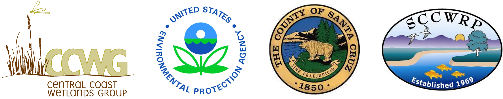

JSSH web

Overview
The Juvenile Salmonid and Stream Habitat (JSSH) database includes monitoring data of salmonid density and stream habitat characteristics in four watersheds in Santa Cruz County, California. Data have been collected every fall since 1994, with one survey available in 1981. Salmonid data include steelhead density in two size classes and presence/absence of Coho salmon. Additional presence/absence data are available for select species of fish, amphibians, and reptiles. Stream morphometry, riparian, and bed characteristics are measured in each reach separately for pools, runs, or riffles. All data have been combined in a geodatabase with spatially referenced information for each survey.
Objectives and approach
Analysis of the JSSH Database (see here) is driven by the following questions:
What is the status and trends of the steelhead and coho populations in these four watersheds?
Where do fish and wildlife species occur in these four watersheds?
What are stream habitat conditions in these four watersheds?
How can information about the steelhead and coho salmon populations and stream habitat conditions inform conservation and restoration efforts?
The analysis will be exploratory to address the general questions and to provide information for follow-up analysis. Our approach will begin by addressing each question in sequence as a means to address the final question. Unless noted otherwise, all analyses will be separate for each watershed. The tabs above link to each step described below.
Salmonid status and trends: Comparison of status and annual trends in salmonid density by size class and individual sites
Factor associated with trends: Factors associated with salmonid density trends
Community analysis: Community analysis of each watershed using species presence/absence, changes over time
Habitat analysis - site: Analysis of habitat differences between riffle, runs, and pools, changes over time, uses habitat data collected at fish sampling sites
Community and habitat analysis: Multivariate analysis of association between habitat measurements and community composition, changes over time, uses habitat data collected at fish sampling sites
Habitat analysis - reach: Analysis of habitat changes at approximate 1/2 mile reach segments
Variable names
Species and habitat variables are shown on the web page as in the raw data. For reference, the complete descriptions are shown here.
Species names:
A_goby: Arrow Goby, BayPF: Bay Pipefish, Bl_Fg: Bull Frog, Bl_Gill: Bluegill, Brwn_Tr: Brown Turtle, Ca_Nwt: California Newt, Ca_Rch: California Roach, Coho: Coho Salmon, Cst_Sculp: Coastrange Sculpin, Dace: Dace, Gi_Sal: Giant Salamander, Gld_Fish: Goldfish, Gld_Shin: Golden Shiner, Grn_SF: Green Sunfish, HCH: Hitch, Lamp: Lamprey, LM_Bass: Large Mouth Bass, MQF: Mosquitofish, NWT: Newt, Pac_herr: Pacific Herring, Pike_Minw: Pike Minnow, Prk_Sculp: Prickly Sculpin, Rd_Fg: Redlegged Frog, Rgh_Nwt: Roughlegged Newt, Rif_Sculp: Riffle Sculpin, Sa_Suck: Sacramento Sucker, Shin_SP: Shiner species, Sln_Sal: Slender Salamander, Stag_Scul: Staghorn Sculpin, Sthd: Steelhead, SthdRT: Rainbow Trout, Stick: Stickleback, Stp_Mull: Striped Mullet, Str_Flo: Starry Flounder, T_goby: Tidewater Goby, Tp_Smlt: Topsmelt, Ws_Turt: Western Turtle, YF_goby: Yellowfin Goby, Ywl_Fg: Yellowlegged Frog
Habitat variable names:
Can: Canopy cover (%), Decid: Deciduous canopy cover (%), DpthAvg: Average depth (ft), DpthMax: Maximum depth (ft), Embed: Embeddedness (%), EsCov: Escape cover (ratio), Fines: Fines (%), Lgth: Station length (ft), Wdth: Station width (ft)
Attribution
All site content and analyses by Marcus Beck. Raw data collected and graciously provided by the JSSH monitoring program in Santa Cruz County, California. Please visit here to view the web page source content. Funding is provided in part by USEPA Region 9 in coordination with Central Coast Wetlands Group at Moss Landing Marine Labs.
